Top 5 Travel Destinations
- Japan
- Taipei, Taiwan
- Hong Kong
- England
- Seattle, Washington
I've been to Tokyo, Osaka, Fukuoka, Kyoto, Nagasaki, and Kumamoto. Out of all the cities I've been to in Japan, my favorite would be Fukuoka because the city felt more quiet and slow. There weren't many tourists there (from what I noticed). The best food I had in Fukuoka was the sashimi; we went to a restaurant that had high quality fish. My favorite was the mackerel because of the texture; it is more firm than other fish.
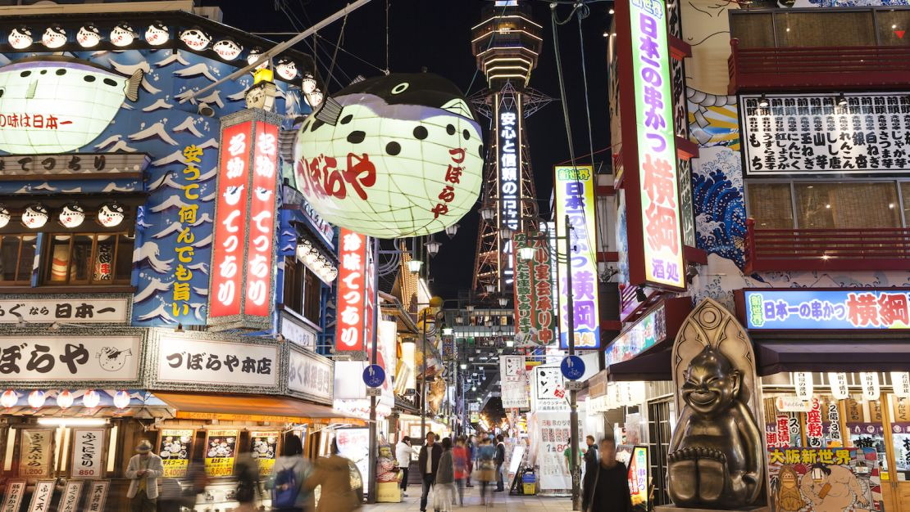 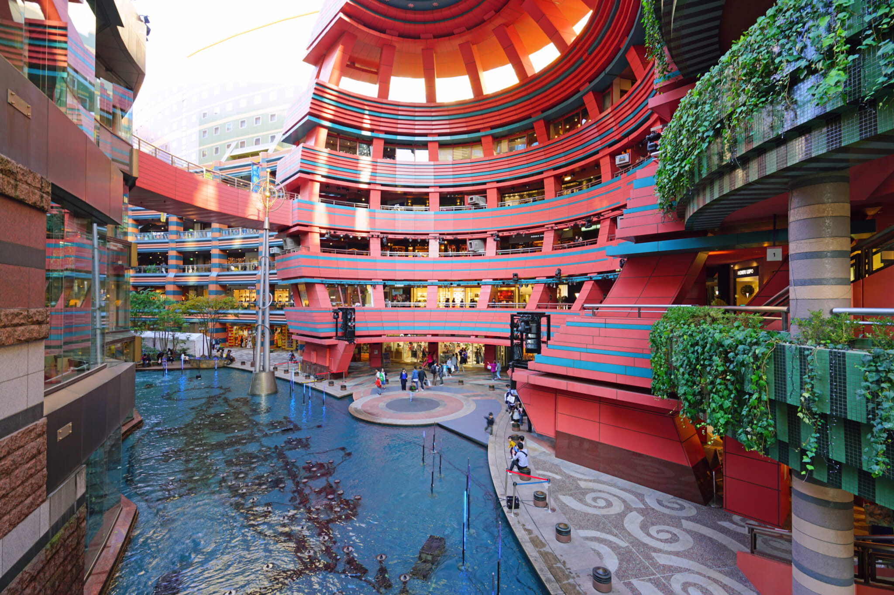 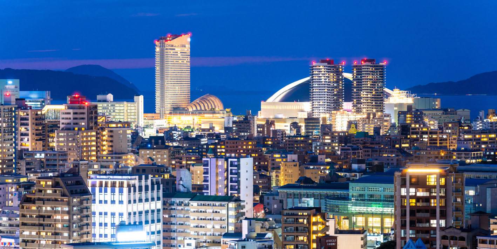Taipei's nightmarkets are one of my favorite parts of the city. Although the architecture is older than Osaka's, there is still a lot of great things around. The city and culture felt more fast paced than America. The food in Taiwan is delicious; my favorite thing I ate there was the sticky rice rolls with pork floss inside. While we were there, we went to the NBA Store, a store dedicated to selling NBA merch; I have not seen a store like that in America.
 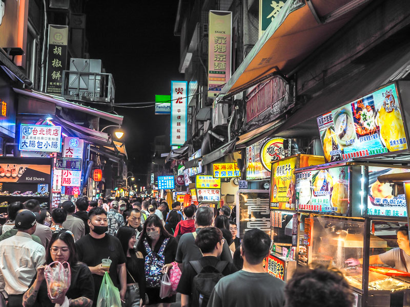
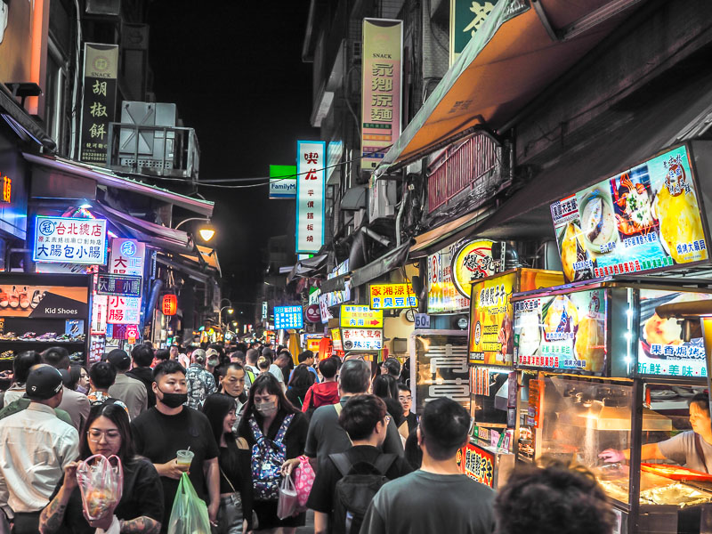

Hong Kong, where my family is from, is on my list because of the food. Whenever we go to Hong Kong, I always end up eating so much; we mainly have dim sum whenever we go out with my grandma. From the street food to sit-down restaurants, Hong Kong food will always be my go to. Not only is the food good, but so is there public transportation; the subway is clean and can get you anywhere and the buses are clean and are always on time. While there are many positives, the one downside is that it gets really hot and humid during the summer. Overall, while I may be based, Hong Kong is still one of my favorite places to go.
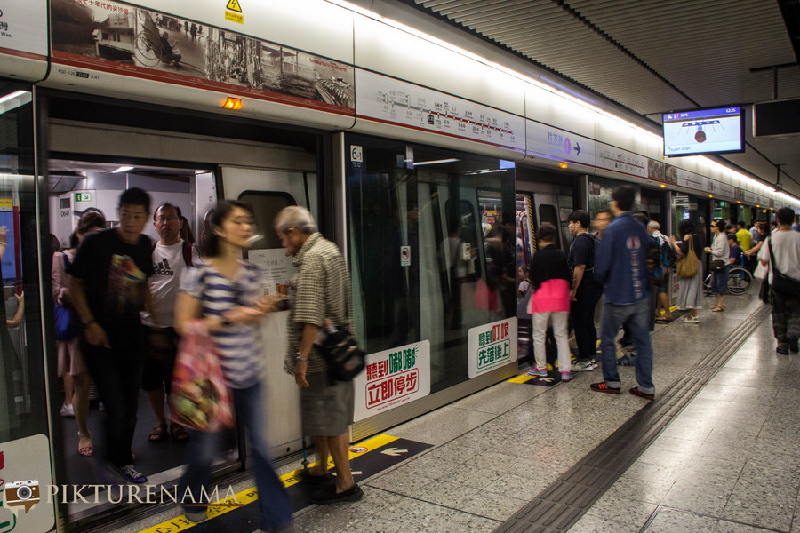 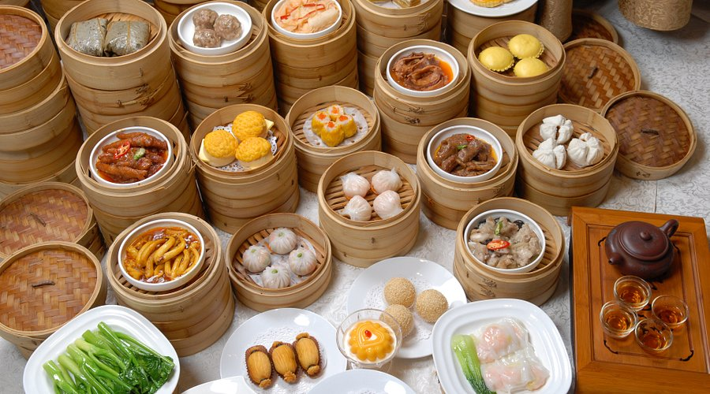
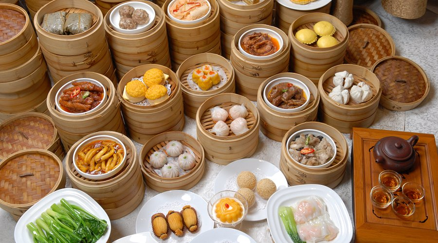
England was nice to travel to because of the blend of historical and modern architecture. Walking through cities like London and the town of Chester made me admire the contrast in the two. The cathedrals gave me a glimpse into the past, while contemporary buildings showcased innovation The weather was hot as we had traveled there during the heart of the summer season. What made it even worse was that there was no air conditioning anywhere. Despite the lack of cooling, I still enjoyed traveling here.
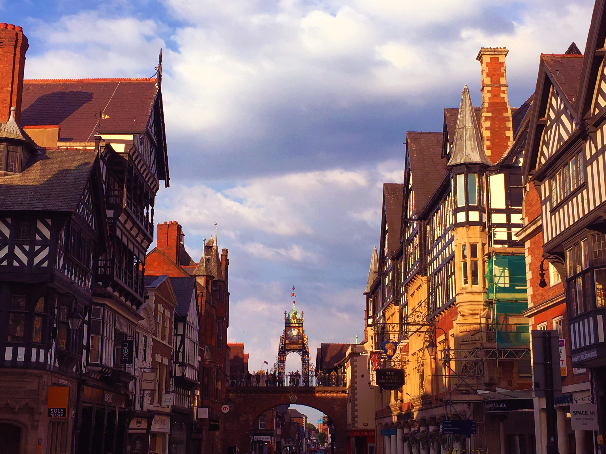Seattle had an amazing mix of urban and natural beauty. Visiting Pike Place Market was a highlight because of the first Starbucks and its iconic sign. The coffee culture in the city was incredible. I felt like there were great cafe's and great pastries everywhere. We also went to the Space Needle which offered a panoramic view of the city.
 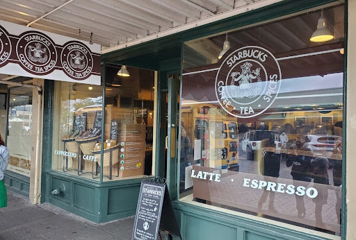
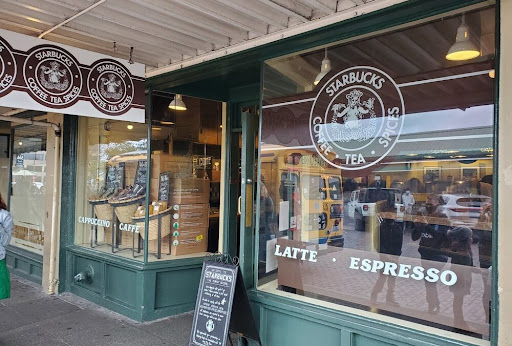


 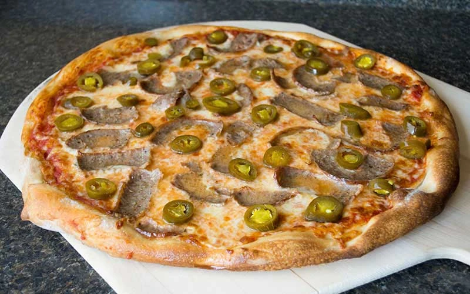
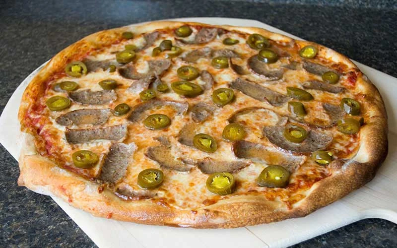